This codelab is an introduction to how to take a first person game made in Unity and enhance it to have a Virtual Reality mode using the Google Cardboard plugin powered by Unity.

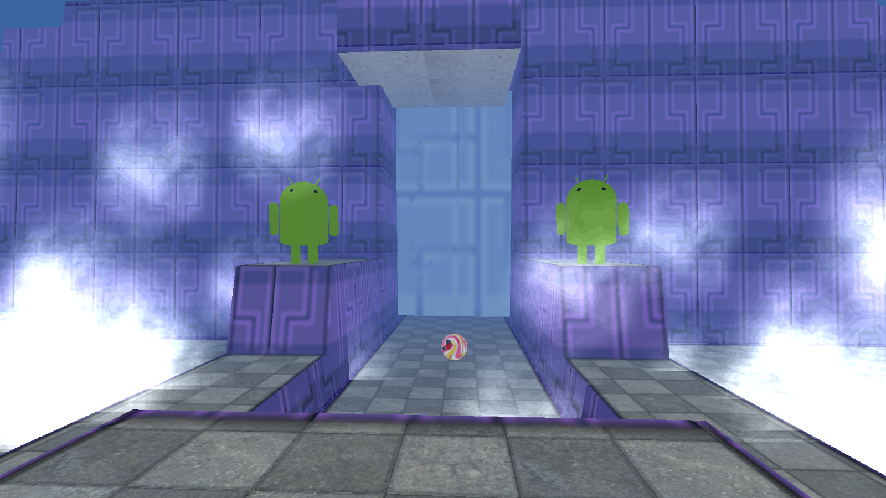 |
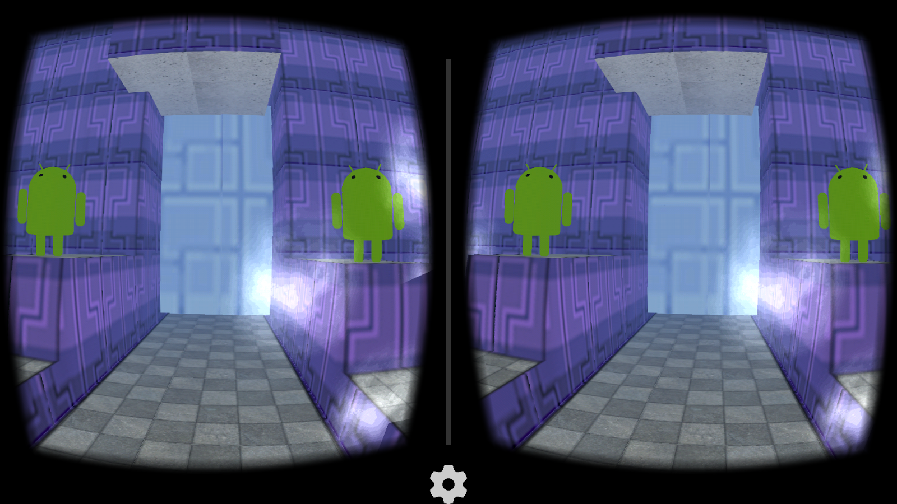 |
What you’ll learn
- Development tools and configuration to build Unity projects targeted for Android.
- How to design a game that can be used in Cardboard and out of Cardboard.
- What the key motivations are to incorporate Cardboard into your next game.
- Knowledge of best-practices for mobile VR.
- Links to key information for developing and publishing great Cardboard applications.
What you’ll need
- Cardboard VR Viewer
- Device compatible with Cardboard (such as Nexus 5, Nexus 4, Samsung Galaxy S5, Samsung Galaxy S4, Samsung Galaxy S3, HTC One M8, HTC One M7, LG G3, or Moto X)
- Unity 4.6.1 or greater. The free version will work for this codelab, Pro Version and Android Pro Add-on needed to enable distortion correction.
- Android SDK (and have Unity pointing to the installation)
- The cardboard plugin https://github.com/googlesamples/cardboard-unity/archive/master.zip
- Game assets downloaded from GitHub: Lollygagger Sample game
- A USB micro to USB cable to connect the device to the computer.
Game Summary
For this codelab, we'll be using a simple and entertaining game, called "Lollygagger". The main game play is to travel along a path, atop a robot, shooting Lollipop "cannonballs" at the Androids that are lollygagging around. Key features of note are:
- Two different Unity scenes, one for the main menu, and one for game play.
- Ability to play in “2D” mode as well as be able to start in Cardboard mode.
- Flinging lollipops to the targets, triggered by touch in 2D mode, or by the trigger on the side of Cardboard in VR mode.
- Super flexible and simple game level logic to allow infinite possibilities of hours of Cardboard fun!
How will you use this tutorial?
How would you rate your experience with building Unity apps?
How would you rate your experience with building Android apps?
First you need the Cardboard SDK for unity
You can either download all the sample code to your computer...
...or clone the GitHub repository from the command line.
$ git clone https://github.com/googlesamples/cardboard-unity.git
Next you need the unity asset package containing the sample game. You can download this here:
First, let's build and run the non-Cardboard version of the game. From there, we'll add Cardboard support.
Configure Unity
- Start Unity. If you have not developed an Android application with Unity before, make sure you configure the Android SDK within Unity. In Unity, click Preferences > External Tools > Android SDK Location, then select the folder where you downloaded and unzipped the Android SDK.
- Click File > New Project and create a new project named ‘Lollygagger_cardboard’.
Import the game assets
Import the sample game scenes and assets into your project:
- Click Assets > Import Package > Custom Package.
- Select the
lollygagger_step0.unitypackagefile you downloaded - Click Import.
Configure the Android player
- Configure Unity to build an Android application
- From the menu: click File > Build Settings...
- Select Android in the platform list
- Click Switch Platform
- Add the game scenes to the build.
- In the project explorer, select Assets
- Drag and Drop Assets/MainMenu scene to the "Scenes In Build" list within the Build Settings dialog.
- Then drag and drop Assets/GameScene scene into the list under MainMenu.

- Configure the Unity player settings
- Click Player Settings… in the Build Settings dialog
- Then expand “Resolution and Presentation” section by clicking on it.
- Set the application default orientation to Landscape Left. This is the correct orientation for the application when the phone is in Cardboard.
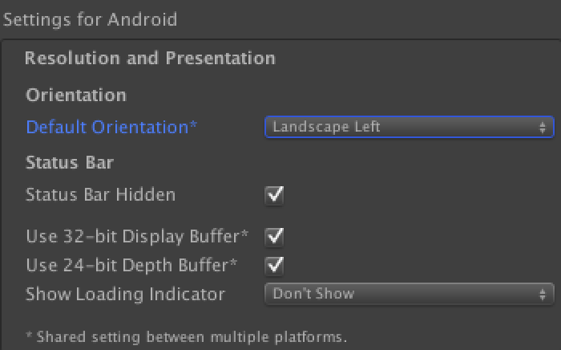
- Expand the “Other Settings” section by clicking on it.
- Enter a unique Bundle ID, this follows .Net namespace (or Java package) naming rules. Typically this is of the form: com.<yourcompany>.<appname>

- Save your project! Better safe than sorry :)
- Connect a device build and run! When prompted for a name for the APK file, enter Lollygagger.apk.
Congratulations! If you can play the starter project game on your Android device, you are now ready to add Cardboard!
Troubleshooting
Even the most simple things can have gotchas! Here are a couple and what to do about it. If you’re still having problems ask for help!
Issue
- I'm only seeing the Unity splash screen and then a blue screen with nothing happening
Solution
- Make sure you have added MainMenu.unity and GameScene.unity scenes to the Build settings
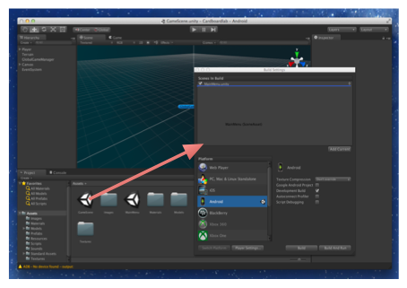
Issue: Error building Player: UnityException: Bundle Identifier has not been set up correctly
Solution: Set the bundle identifier to something other than the default. This is in the player settings > Other Settings section.
In this lesson, you’ll import the Cardboard SDK into the Unity project. This gives you all the scripts and easy to use prefabs for quickly and easily enabling the game to be played in virtual reality mode.
Add the Cardboard SDK to the project
- Unzip the Cardboard SDK if you haven't yet
- From the menu in Unity: click Assets > Import Package > Custom package
- Select CardboardSDKForUnity.unitypackage
- Once the package is opened, Unity presents a list of the files within in the package.
- You can deselect the Demo Scene and the Legacy/Demo Scene folders, since we won’t be using it in this exercise.
- Click "Import"
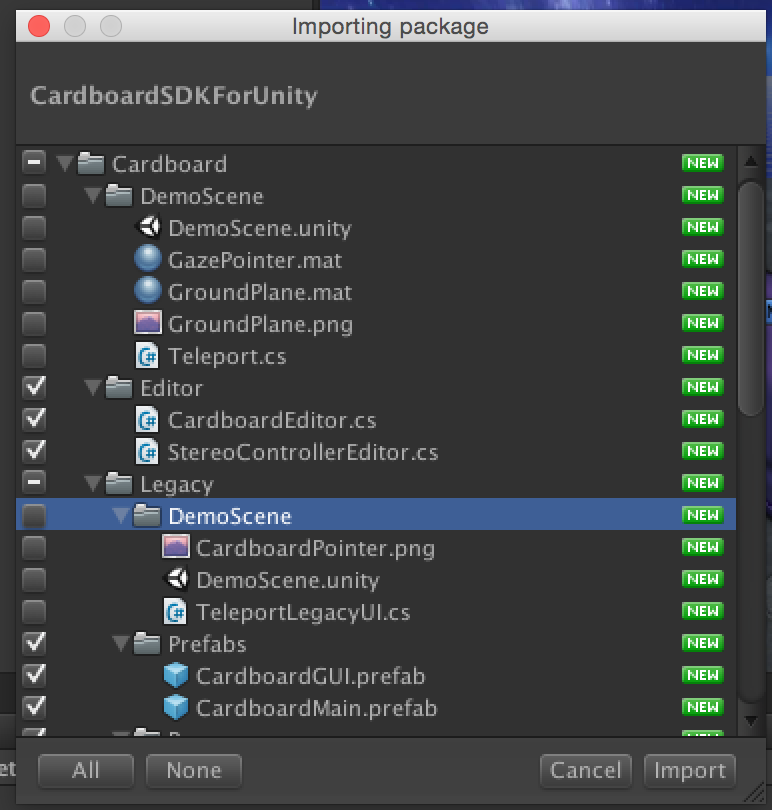
Add cardboard mode to the main menu scene
This step adds the stereo cameras and related scripts which are used by the Cardboard SDK to render the stereoscopic view needed to use Cardboard.
- Open the main menu scene. In the project explorer, select the Assets folder, and then double click the MainMenu scene.
- Select the Main Camera in the Scene hierarchy.
- From the menu, click Component > Cardboard > Update Stereo Cameras. This does the following:
- Adds the StereoController script component (controls the rendering of the stereo effect)
- Adds the CardboardHead script component (the “head” containing the “eyes”)
- Creates Left and Right child cameras (aka the “eyes”)
- Also adds the SkyboxMesh script component (important since we use a skybox background).
Change the UI to be in world space
This step converts the main menu from being mapped to the Screen Space (which is based on the screen dimensions) to be mapped in the World Space (which is based on the 3d coordinates within the scene). This is done so that the menu rendering can be done by the stereo cameras used by Cardboard.
- Select Canvas from the Hierarchy window, then in the inspector panel:
- Change Render Mode to World space
Change position to (0, 0, 750)
Change Width and Height to 640 and 480
pivot = (.5, .5)
Change scale to (1, 1, 1)
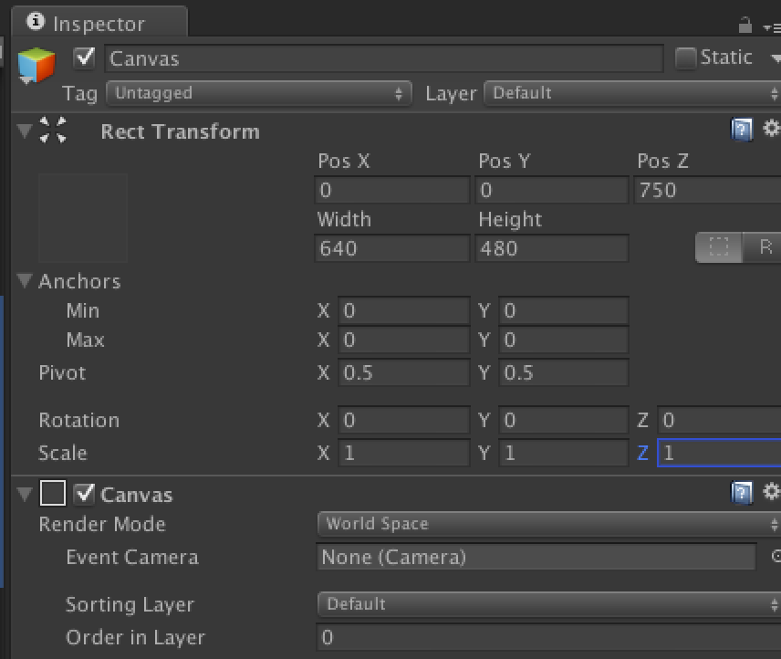
- Associate the Main Camera with the Canvas. This is done so that UI events can be translated from the screen coordinates to the world coordinates.
- Click on the Canvas
- In the properties inspector, click on the circle control next to the Event Camera which will bring up the object selection dialog.
- Select the Scene tab, then Main Camera object.

- Check the menu location and size. You can do this by clicking on the Game tab in the scene editor. You should see:
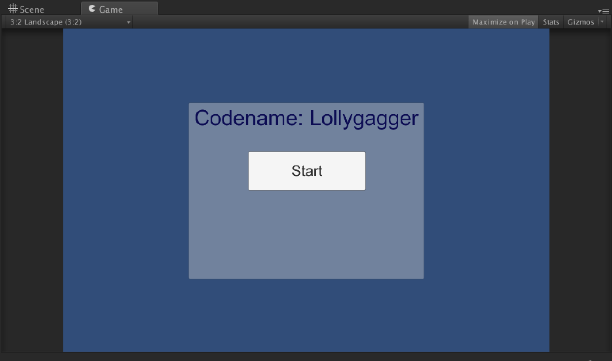
Add the Cardboard mode button to the menu
In this step, we add a button to the menu that will turn on and off "Cardboard Mode". In cardboard mode the stereoscopic rendering is done, in non-cardboard mode it is the normal 2D rendering. Just to make everything easy, we have made a prefab button.
- Find the cardboardButton prefab in the project explorer. This is under Assets/Prefabs.
- In the Hierarchy panel, expand the Canvas object and the Panel object.
- Drag and drop the cardboardButton prefab onto the Panel object in the hierarchy. When you are done, the hierarchy should look like:
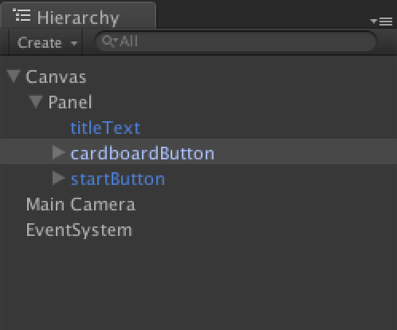
Next, we'll write the script that will run when the button is clicked.
Now that there is a button on the menu for switching the cardboard mode, we need to make it do something when it is clicked. So finally we get to write some code!
- Create a new script component on the Canvas.
- Select the Canvas object in the hierarchy.
- In the properties panel, scroll to the bottom and click Add Component
- In the list of component types, scroll to the bottom and click New Script.
- Name the script CardboardModeMgr, and keep the language CSharp.
- Click Create and Add.
There are two tasks that this script must do. First, it should handle the toggling of Cardboard mode, and second, it must handle the pointer functionality. This is the equivalent of using the mouse on a computer, or your finger on a mobile device. When in Cardboard mode the direction you are looking needs to be treated in the same manner.
Handle Cardboard mode
There are two methods we need to handle the cardboard mode.
- When we start figure out which mode we should be in.
- When the button to change the mode is clicked, we change the mode and remember which mode we are in.
Open CardboardModeMgr script by double-clicking on it, delete the entire contents and paste in the following code.
- Save the script and switch back to the Scene Editor.
Handle VR pointing and clicking
In order to control the game play while in cardboard mode, we need to add an input module to the event system that uses the player's gaze to select or point to objects and use the cardboard trigger as an input event.
- In the scene hierarchy, select the EventSystem object.
- From the menu, select Component > Scripts > Gaze Input Module.
Associate the camera with the other game objects
In order to gain access to the user’s direction of view, or gaze, the main camera needs to be made available to these components.
- Select the Canvas object in the hierarchy.
- Notice in the properties inspector for the Cardboard Mode Mgr component, there is a place for Main Camera.
- Click on the circle next to the value and select the Scene tab, then Main Camera object.
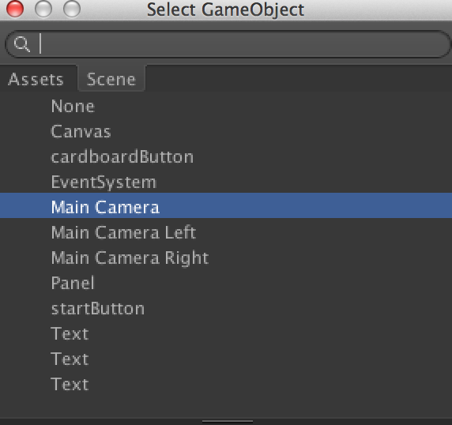
Associate the click event with the script
- In the scene hierarchy, select the buttonCardboard object(under Canvas/Panel) .
- In the properties inspector, scroll down to the On Click () section.
- Click the + to add another handler.
- Make sure Runtime Only is selected
- For the game object, click the circle, and under the scene tab, select Canvas by double clicking.
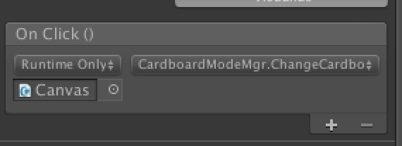
- Drop down the function selection (initially showing No Function) and select CardboardModeMgr.ChangeCardboardMode()
- Save the scene, and Save the project!
The Cardboard SDK has the facility to preview the stereo rendering in the editor. Using Alt+mouse to move the head around. It is not perfect--specifically the input events can be can get a little confusing since the mouse is present, but it is a good quick way of doing a sanity check.
But enough sanity! Let’s build the project again and run the app. Click on the Cardboard Button to go into VR mode, and put your phone in the Cardboard device.
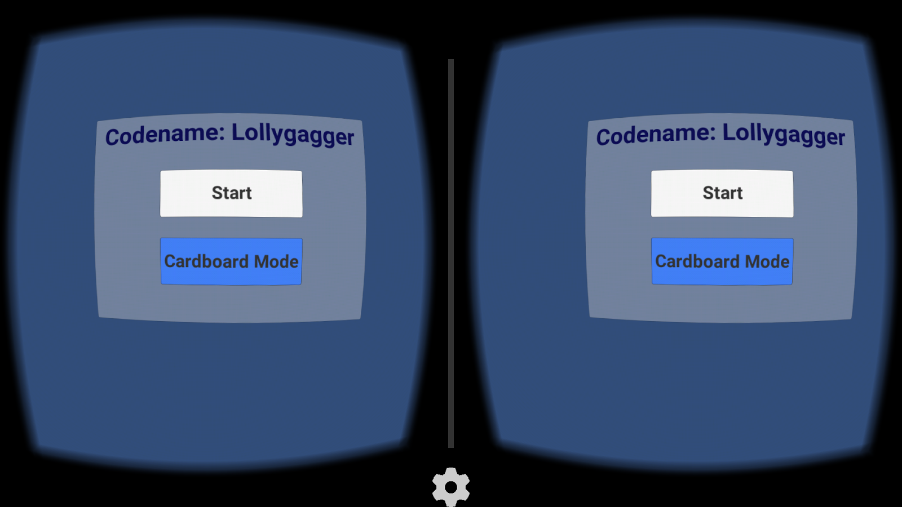
Look around, see how the buttons become selected by just looking at them!
Using the trigger will click the selected button--but be careful!! The main game is not in VR mode (yet) so trying to play the the main game in Cardboard can be a dizzying experience…..
This lesson updates the main game scene to be VR enabled. This involves similar steps that you just did in the previous lesson. Specifically adding the stereoscopic rendering, updating menu UIs and adding trigger support.
Add Cardboard view to the Game Scene
This step adds the stereo cameras and related scripts which are used by the Cardboard SDK to render the stereoscopic view needed to use Cardboard.
- Open the game scene. In the project explorer, select the Assets folder, and the double click the GameScene scene.
- Select the Main Camera in the Scene hierarchy. Since the game play is in first person, the main camera is a child object of the player.
- From the menu, click Component > Cardboard > Update Stereo Cameras. This does the following:
- Adds StereoController (controls the rendering of the stereo effect)
- Adds CardboardHead (the “head” containing the “eyes”)
- Creates Left and Right child cameras (aka the “eyes”)
- Also adds SkyboxMesh (important since we use a skybox background).
Add the GazeInputModule script to the EventSystem
The GazeInputModule handles input events, so it needs to be on every scene.
- In the scene hierarchy, select the EventSystem object.
- From the menu, select Component > Scripts > Gaze Input Module.
Save and Run!
- File > Save scene
- File > Save project
- File > Build and run
When you start the game, if it is not in cardboard mode, click on cardboard mode and then Start.
Great News: The scene is in 3D and you can look around the virtual world!
Not So Great News: Shooting, and the menu are not working (yet, but that is why you’re here!)
Change Aiming to be based on the gaze of the player
In the 2D world, the finger touch is used to rotate the player in order to aim and shoot. In VR mode, the rotation is done by the actual user, and the Cardboard SDK handles that for you!
- Open the MouseLooking script. This is found in the project explorer, Assets/Scripts.
- Then at the top of the Update() method paste the following. It does not affect the application other than saving a few precious CPU cycles.
- Save the script and return to the Unity editor.
Wonderful - all those CPU cycles are yours to keep!
Add firing using the cardboard button or trigger
- Open the Shooting script. This is found in the project explorer, Assets/Scripts.
- In the Update() method, find the if statement:
And change it to:
- Save the script and return to the Unity editor.
- Save the scene and the project.
- Build and run!
Make the ending menu VR compatible
This is similar to what we did in the MainMenu scene to make the menu appear in Cardboard mode. As you recall, the UI canvas needs to be mapped in the World Space (which is the 3d coordinates within the game) so that the menu rendering can be done by the stereo cameras used by Cardboard.
- Select Canvas from the Hierarchy window, then in the inspector panel:
- Change Render Mode to World space
- Change position to (25, 0, 135)
- Change Width and Height to 240 and 180
- pivot (.5, .5)
- Change scale to (0.04, 0.04, 0.04)
- Set the Event Camera to be the Main Camera (By now you should know how to do this!) Hint: click the circle next to the property and select the Main Camera.
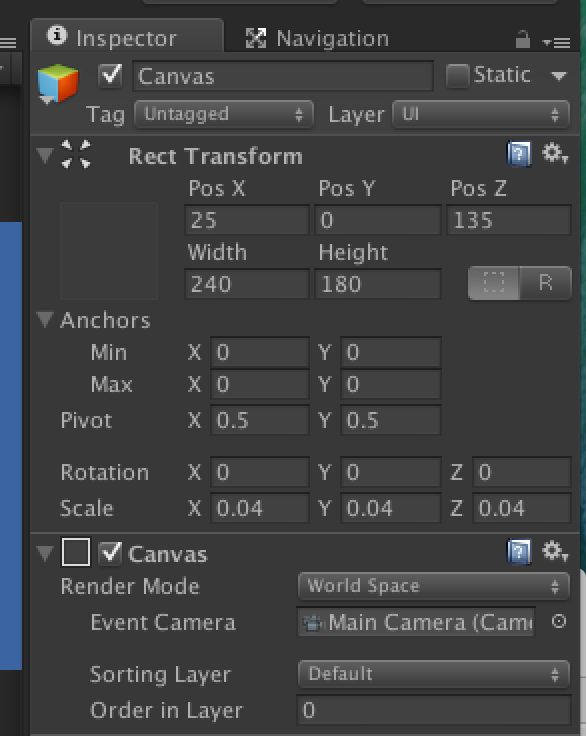
- Save the project
- Build & run and be amazed!
Congratulations!!! You've just taken a giant step to the exciting world of Cardboard using Unity. But as you can imagine, there are so many more facets to creating awesome Cardboard games.
Here are some references for you to explore on your own time.